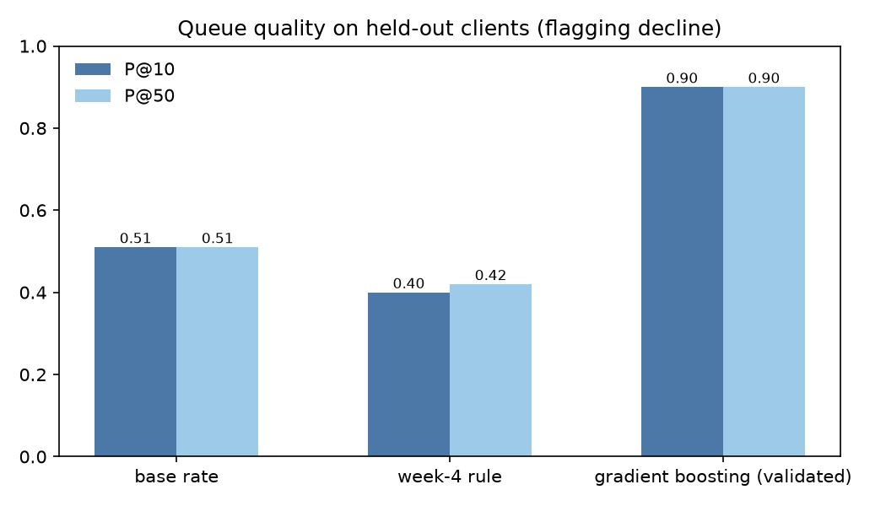
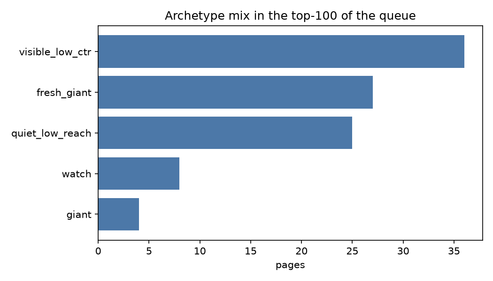
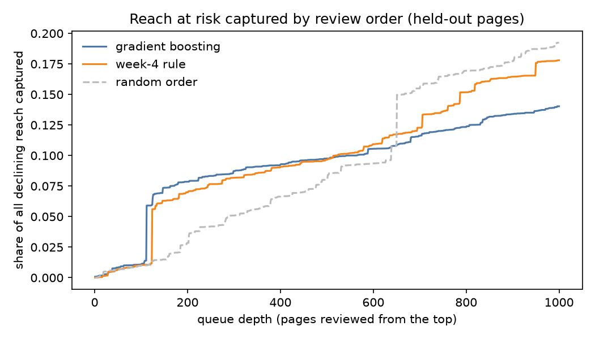

1. Abstract
Question. FlyRank publishes content into client websites at scale, then watches search performance to keep it sharp. Over time pages decay — rankings slip, CTR drops, impressions slide — and the team cannot review them all. With limited editorial hours, which pages should a FlyRank content editor review first, and what action should each page get?
Data. I worked with an anonymized release of the FlyRank ML Internship dataset: 30,000 pages across 32 pseudonymized clients with trailing-90-day search performance.
Method. I scored every page with an interpretable hand-built rule and a gradient-boosting model on 36 leakage-audited features, validating both on a client-grouped holdout where no client appeared in training (6,163 pages, 7 held-out clients).
Result. On that held-out set the gradient-boosting ranker placed already-observed declining pages at the head of its queue at P@10 = 0.90 (the hand-rule: 0.40; chance ≈ 0.51), with AUC 0.622 and consistent results across repeated grouped splits and GroupKFold.
What it is for. The output is a public, non-production review playbook — an archetype-and-reason-code queue that answers the question FlyRank's content team faces every week (where do we start?) by ordering which pages a human should read first, not an automated refresh system and not a forecast.
Keywords: content refresh · content decay · search performance · client-grouped validation · label leakage · precision@K · decision support
2. The problem
FlyRank builds content as infrastructure: researches, writes, publishes pages straight into a client's website, then monitors search performance and optimizes. That full-cycle model works at scale — but scale means thousands of pages, and every one of them ages.
Pages that once ranked quietly slide down while nobody is watching. By the time the drop is obvious, reversing it is expensive. FlyRank already runs hand-written flags — quick-win tags, needs-attention signals — that surface some of these pages. But these rules run out where signals get tangled: a page that looks fine on staleness alone might be silently hemorrhaging impressions, and a "needs attention" flag gives no guidance on which action to take or which page first. The real scarce resource is editorial time, and the real decision is: of the 30,000 pages FlyRank manages, which one should a human fix first?
This paper sits exactly in that gap. It builds a client-grouped, leakage-audited ranking model on FlyRank's own production data, then wraps it in an archetype-and-action playbook that answers the question FlyRank's content team faces every week: where do we start?
3. Data
Source and size. A real FlyRank production snapshot, anonymized for the ML Internship: a single table, one row per indexed page — 30,000 rows × 44 columns across 32 pseudonymized clients. This is not synthetic data; it is FlyRank's actual content portfolio, the same data FlyRank's own production flags run on.
Time windows. Performance metrics are trailing-90-day aggregates (e.g. impressions_90d, clicks_90d, avg_position). The label is derived from a comparison inside that window (see Methodology). The release is one snapshot: every row shares the same trailing window, so a temporal train/test split is not representable from this file.
What was excluded, and why.
trend_direction,trend_pct— the label and its sibling; never features.- Six
*_last_30d/*_prev_30dcolumns — they sit inside the label's window; feeding them in is leakage (measured in the audit below). - All identifiers (
client_id,content_id) — pseudonyms are for grouping and lookup only, never model inputs.
Public-safety: only pseudonyms and aggregates appear anywhere in this paper. No client names, URLs, or raw queries.
4. Methodology
Label
is_declining_label = (trend_direction == "down") — the page's already-observed trend over the recent window. Because it is observed state, the honest description of our model is a state estimator ("matches the profile of pages observed declining"), never a forecaster.
Features (36)
- 12 log1p count columns (impressions, clicks, sessions, engagement, scrolls, keyword volume, word/char counts, …)
- 10 raw state columns (position, CTR, engagement/scroll rates, content age, days since update, …)
- 6 ordinal tier codes (competition, age, freshness, word count, impression, position tiers)
- One-hot
content_type+main_intent
Assumption, stated: cross-sectional features can rank pages by similarity to already-declining pages. That supports review order, and nothing more.
Baseline: the hand-written rule (Week 4)
score = log1p(impressions_90d) · (1 + stale_flag) · (1 + ctr_gap_flag)
stale_flag = days_since_last_update ≥ 180 and impressions_90d ≥ 300 → action: refresh content
ctr_gap_flag = 0 < avg_position ≤ 10 and ctr < 0.5 and impressions_90d ≥ 300 → action: rewrite title/meta
one reason code per page: stale_and_low_ctr_visible / stale_visible / low_ctr_good_position / monitorSignal checks that produced it: staleness was mixed (the update dates sit on a few bulk batch dates), CTR-vs-position was confirmed (visible pages with CTR < 0.5% decline at an observed higher rate). The rule is evaluated only — it is the thing to beat, never a feature (the audit shows why).
Validation design
- Client-grouped holdout (
GroupShuffleSplit, test 20%, seed 42): no client appears in both train and test — the model has never seen these clients' content, just as a production FlyRank deployment would not have. Training 23,837 pages (decline 0.550), test 6,163 pages from 7 held-out clients (decline 0.511). - Robustness: re-drawn grouped splits (seeds 7, 123, 2026) and
GroupKFold(5)by client. - Why grouped, not random: a random split lets one client's pages sit on both sides and the model memorizes the client. Measured: random-split AUC for gradient boosting 0.786 vs 0.622 grouped — the gap is how much of the "win" was memorization, and the grouped number is the one we report.
Leakage audit (Week 6)
| Probe | AUC (grouped test) |
|---|---|
| Honest features as shipped | 0.622 |
| All eight overlapping 90-day sums removed | 0.621 |
| My own hand-rule added as a feature (directional, dropped) | 0.624 |
One label-adjacent sibling column added (impressions_last_30d) | 0.849 |
The bottom row is the harness sanity check: leak a sibling column and the score explodes — which proves the top row is not quietly reading the same column. The shipped model does not lean on the overlapping 90-day sums (removing them barely moves AUC) and it is not secretly the hand-rule (adding it barely moves AUC).
5. Results
On the same client-grouped holdout, every model beats the hand-rule at the top of the queue, and gradient boosting leads at P@10–@100. Headline framing is honest: boosting ≈ logistic regression on AUC (0.622 vs 0.622) — the complexity buys queue shape, not a better global score.
| Method | P@10 | P@20 | P@50 | P@100 | AUC |
|---|---|---|---|---|---|
| Base rate (chance ordering) | — | — | — | — | 0.511 |
| Hand-written rule (baseline) | 0.40 | 0.40 | 0.42 | 0.41 | 0.542 |
| Logistic regression | 0.80 | 0.75 | 0.76 | 0.72 | 0.622 |
| Random forest | 0.60 | 0.75 | 0.68 | 0.69 | 0.610 |
| Gradient boosting | 0.90 | 0.90 | 0.90 | 0.86 | 0.622 |
Held-out test n = 6,163 pages, 7 held-out clients. GroupKFold(5) AUC by client: gradient boosting 0.684 ± 0.043, random forest 0.678 ± 0.037, logistic regression 0.673 ± 0.039. Repeated grouped splits: boosting P@10 0.8–0.9, AUC 0.66–0.69.



Where the score is blind, measured
The model under-ranks the genuinely big pages: the two largest flagged-and-missed examples were ~500K-impression, recently-updated pages that the hand-rule had actually caught. Of flagged at-risk reach (~12.7M impressions), the top-50 rows by probability cover only ~2% — the giants sit at low probability ranks. This is why the playbook's first rule is a human hand-check of giants, not faith in the score.
6. Limitations & honest framing
- One snapshot. No time generalization is claimed; there is no before/after, so nothing here is evidence that refreshing causes recovery.
- Observed state, overlapping windows. The label is already-observed decline, and 90-day feature sums overlap its windows — acceptable for a state estimator, disqualifying for a forecast.
- Portfolio-bound validation. Held-out clients are within one 32-client portfolio; a new client needs its own validation before the queue is trusted.
- Ranking metric, not a guarantee. P@K is measured in this sample; it describes the queue, not next quarter.
- Pseudonymous data. No client-, keyword- or URL-level conclusions.
- Reach concentration. The biggest pages are the hardest for the score, and are handled by the giants-first rule, not by the probability ordering.
Language used throughout is the claim ladder: observed / measured / directional / decision-support. Nowhere does this paper say "refresh improves rankings" — it says these pages look worth reviewing first, with the reasons stated.
7. Ranked recommendations (the action playbook)
What a FlyRank content editor does with the queue: read it from the top, spend the cheap check first, and never let the score replace a human decision. This is the playbook that wraps around the ranker — the part FlyRank's content team would actually touch.
| Archetype | Trigger (measured on the page) | Recommended action | Effort |
|---|---|---|---|
| Giant / fresh giant | impressions ≥ 3,000 | Hand-check the numbers first — even a small trend shift is a big absolute move | 1 · cheap |
| Mature & stale | impressions ≥ 300, last update ≥ 180d, age ≥ 270d | Full content refresh (facts, structure, intent) | 3 · costly |
| Visible, low CTR | position 1–10, CTR < 0.5%, impressions ≥ 300 | Rewrite title/meta; run one snippet test | 2 · medium |
| Visible, steady | position 1–10, impressions ≥ 300 | Verify keyword–intent match before touching | 2 · medium |
| Quiet, low reach | impressions < 300 | Monitor only — below the noise floor, do not act | 0 |
| Watch | anything else flagged | Recheck next cycle | 0 |
Never automated. No auto-publish of refreshes (no causal evidence), no auto-delete / consolidate / redirect (destroys reach), no auto-sent client numbers (all statistics are on pseudonymous data), no acting on sub-300-impression pages (noise floor), no forecasting next-quarter traffic, and no claim of "knowing" any ranking algorithm. Every queue row is a question a person answers.
Monitoring & retrain triggers. Re-validate on a new export if grouped-holdout AUC falls below 0.592 or P@10 below 0.80; drift-check the stored baselines (median impressions 731, median days-since-update 20, median position 11.4); and if editors find that the top-50 they review confirm decline at below the base rate (~51%), the queue has gone stale.
8. Reproducibility
Everything is in the repository this page ships from, and every number on this page is regenerated by the notebooks it names.
- Repository — seed 42 throughout; Python 3.13, scikit-learn 1.9.0 (sklearn-native gradient boosting; no external model libs).
work/notebooks/w04_baseline_score.ipynb— signal checks and the hand-rule baseline.work/notebooks/w05_model.ipynb— first model vs baseline on the grouped holdout.work/notebooks/w06_validation_audit.ipynb— the paper-level audit: random vs grouped split, leakage probes, claim rewrite.work/notebooks/w07_action_playbook.ipynb— regenerates the ranked queue (work/outputs/action_playbook_queue.csv) and the figures embedded above.work/notebooks/capstone.ipynb— this paper's evidence annex; re-runs the headline table.- Receipts:
work/outputs/w05_model_metrics.json,work/outputs/w07_action_playbook_metrics.json.
How to rerun. Clone the repo, run each notebook top to bottom in the order above. The queue CSV is regenerated by w07 and is intentionally kept out of git (a CI leak-guard blocks data files); the figures and JSON receipts are committed.
9. Acknowledgments & data credit
This work is built on the FlyRank ML Internship dataset — an anonymized, public-safe release of real production search data (~30,000 pages, 32 pseudonymized clients) provided by FlyRank (opens in a new tab), the search-intelligence platform behind the FlyRank ML Internship. The data is the reason this paper is able to say measured: it is real portfolio behavior, not synthetic. Any errors in interpretation are the author's, not the data's.
The 10-second version
Problem. FlyRank publishes content at scale; the pages decay; the team cannot review them all.
Contribution. A leakage-audited ranker, validated on FlyRank clients the model never saw, that orders pages for review and explains each action.
Utility. A FlyRank editor opens the top of the queue, checks the giants first, and spends the 30 cheapest seconds on title/meta work; nothing is automated or forecast.